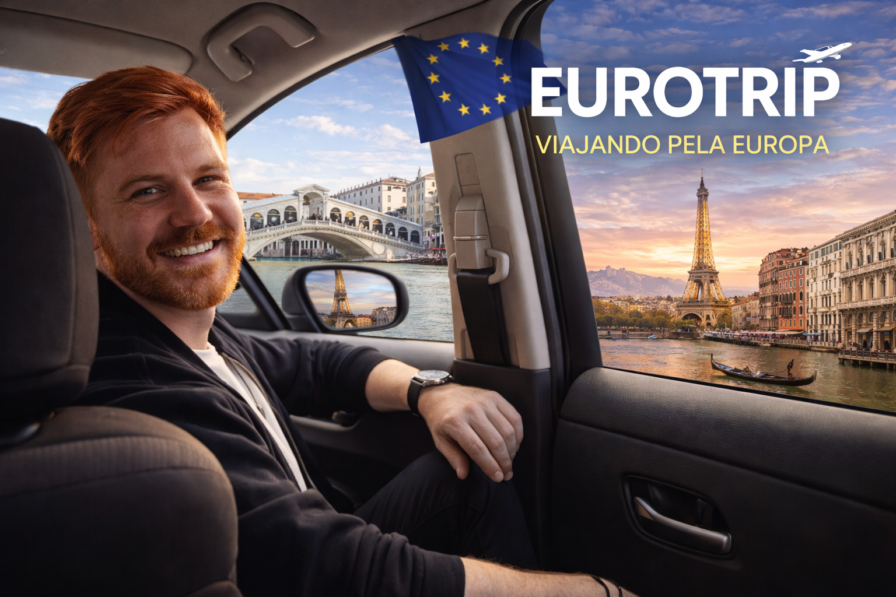
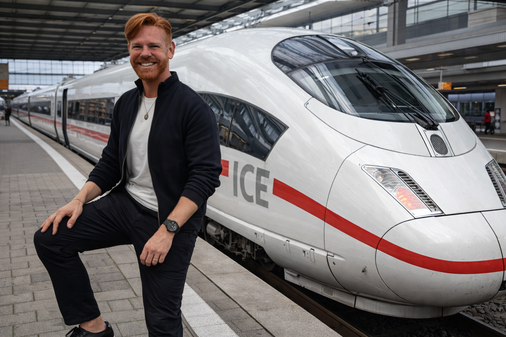
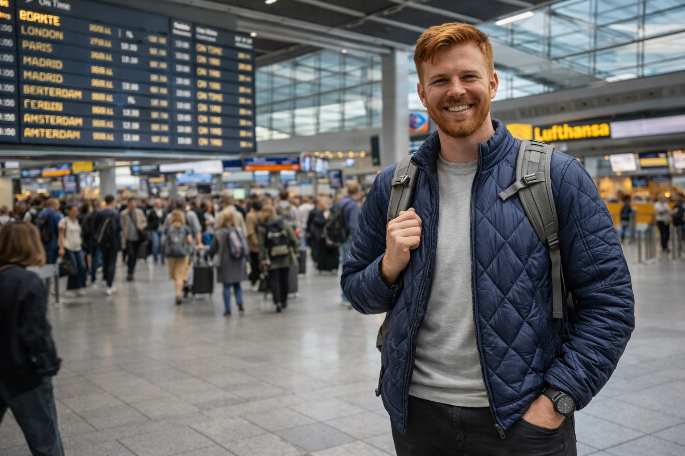

Defina o recorte
Antes de abrir o buscador, pense que tipo de Eurotrip você quer fazer: primeira viagem, clássica, mais cultural, mais panorâmica ou mais enxuta.
Fazer uma Eurotrip boa não é sair comprando passagem sem pensar. O que faz diferença de verdade é entender por onde entrar, como dividir a viagem em blocos, quantos países faz sentido combinar, como se deslocar e em que momento vale reservar voo, hotel e transporte interno. Aqui, a ideia é te ajudar a organizar essa viagem com mais clareza e menos erro.
Muita gente começa pela passagem aérea e depois tenta encaixar a viagem em volta dela. O problema é que isso te prende a uma lógica de chegada e saída que nem sempre combina com o roteiro mais inteligente.
Antes de abrir o buscador, pense que tipo de Eurotrip você quer fazer: primeira viagem, clássica, mais cultural, mais panorâmica ou mais enxuta.
Às vezes vale entrar por Lisboa, Paris ou Roma e sair por outra cidade, em vez de forçar ida e volta pelo mesmo ponto.
Quando o desenho da viagem está claro, fica mais fácil comparar voo, hotel e transporte interno sem desperdiçar dinheiro.
Em vez de tentar fazer países demais em poucos dias, pense a Europa em blocos de 5 a 7 dias. Isso dá mais conforto, menos deslocamento perdido e uma experiência muito melhor no destino.
Ótimo para primeira Eurotrip. Lisboa, Porto, Madrid e Barcelona formam um recorte forte, fácil de entender e muito bom para quem quer começar pela Europa clássica do sul.
Paris pode ser a base principal, com extensões para Normandia, Champagne, Vale do Loire ou Costa Azul, dependendo da época e do estilo da viagem.
Roma, Florença e outras bases como Toscana, Cinque Terre ou Lago de Como funcionam muito bem para quem quer misturar cidade, história, paisagem e gastronomia.
Nem toda Eurotrip precisa ser uma corrida por vários países. Às vezes, uma viagem com dois países bem desenhados rende muito mais do que uma lista longa de cidades mal encaixadas.

Trem, ônibus e low cost podem funcionar muito bem, mas cada um tem seu momento. O segredo é comparar preço, tempo e praticidade — não só a tarifa mais barata na tela.
Excelente para trajetos curtos e médios, especialmente quando o tempo total porta a porta é melhor do que ir ao aeroporto. Em muitos casos, é a opção mais confortável.
Costuma ser o caminho mais econômico, principalmente em viagens noturnas ou quando o objetivo é reduzir custo entre cidades próximas.
Pode valer muito a pena, mas sempre some bagagem, deslocamento até aeroportos secundários e horários menos confortáveis antes de comparar.


Os custos variam bastante conforme cidade, época e estilo de viagem, mas estes recortes ajudam a calibrar expectativa antes de reservar.
Faixa mais acessível dentro da Europa Ocidental, boa para começar, especialmente para quem quer equilibrar experiência e orçamento.
Costumam exigir um pouco mais de orçamento, mas ainda podem render bem quando o roteiro está enxuto e bem montado.
É uma das bases mais caras, então vale equilibrar a estadia e evitar excesso de noites se o orçamento estiver apertado.
Pode variar bastante, mas costuma ficar entre Espanha e Paris. Cidades italianas menores às vezes entregam melhor custo-benefício.
Levar pouco dinheiro em espécie, usar cartão internacional com boa conversão e pagar sempre na moeda local costuma ser a lógica mais segura e prática.
Montaria o roteiro, estimaria um custo médio por dia, separaria a parte aérea da parte terrestre e viajaria com pelo menos duas opções de pagamento para ter mais segurança e flexibilidade.
Muitas vezes, o problema não é a Europa estar cara. É a viagem ter sido montada sem lógica suficiente.
Isso aumenta deslocamentos, cansaço, gasto com transporte e reduz a qualidade da experiência em cada lugar.
Você pode acabar preso a uma entrada ou saída que encarece o restante da Eurotrip.
O preço inicial parece ótimo, mas a conta real muda quando entram mala, assento e deslocamento até aeroportos secundários.
Ficar longe demais pode gerar mais gasto e perda de tempo no dia a dia da viagem.
Depois de definir o recorte da sua Eurotrip, faz sentido pesquisar voos, comparar hotéis e abrir a página específica de passagens para a Europa.
Abra os buscadores quando você já souber por onde quer entrar, quais blocos quer fazer e quantos dias faz sentido em cada base. Isso melhora muito a qualidade da compra.

Em cidades muito disputadas, reservar antes pode ajudar a garantir melhores horários, evitar filas e deixar a Eurotrip mais redonda. Isso vale especialmente para atrações icônicas, tours guiados, bate-voltas e experiências com data marcada.
Museus concorridos, ingressos com hora marcada, tours panorâmicos, experiências gastronômicas, atrações muito procuradas e passeios em alta temporada.
Se você quiser decidir melhor entrada, saída, blocos, cidades, ritmo de viagem e lógica aérea, este é o momento mais natural para pedir ajuda personalizada.
Principalmente se for sua primeira Eurotrip, se você estiver em dúvida entre vários países, se quiser encaixar destinos mais premium ou se estiver tentando otimizar melhor tempo e orçamento.
Se preferir, eu também posso te ajudar a transformar essa ideia em uma viagem mais clara, mais bem desenhada e mais alinhada com o seu perfil.
Depois de entender a lógica da Eurotrip, vale abrir os países, comparar voos e continuar afinando o roteiro dentro do site.
Abra a página-mãe para comparar países, hubs e estilos de viagem dentro do continente.
Veja a página prática focada em passagens, datas, hubs e compra com mais contexto.
Use a camada prática do site para sair da inspiração e avançar para uma viagem mais bem resolvida.